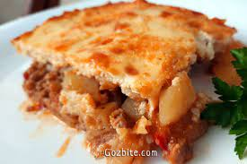

Moussaka

Sexy Moussaka ;)
Whoever understands, stops here and chooses Traditional Bulgarian moussaka!
Products:
- minced meat - 500 g
- potatoes - 1500 g
- onion - 100 g
- carrots - 50 g
- peppers - 70 g red
- tomatoes - diced from a can 3 tbsp
- parsley - fresh 4 - 5 sprigs
- oil - 40 ml
- red pepper - 2 tbsp
- pepper
- salt
- yogurt - 400 g
- eggs - 2 pcs
- flour - 2 tbsp
Steps:
- Finely chop the onion, pepper and carrot
- Fry them with the oil and minced meat in a pan
- Season with red, black pepper and salt.
- Cut the peeled potatoes into cubes and put them in a medium-sized pan
- Pour the minced meat. Stir well and pour in enough hot water to cover the potatoes
- Cook in a hot oven at 200 degrees until the potatoes are soft
- Add the tomatoes and chopped parsley. Cook for another 10 min
- Make the topping by scrambling the eggs well with the milk and flour
- Add a pinch of salt and pour evenly over the moussaka
Back to homepage